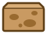

Blue Bin Catch
A Scratch catch game for my P5 coding club. Rubbish falls from the sky. Catch what goes in the blue recycling bin. Let the rest fall.
I'm Mei Ling. I run an after-school coding club for upper primary pupils. In eco week, I watched my pupils throw tissues into the blue bin. They meant well. So I made a game about it. It has 4 parts:
- Play the game
- Get the project
- See the code
- Starter project and task card
- Club lesson plan and sharing rules
Play it
Press Start. Move the bin with your mouse or finger. On a keyboard, click the game, then use the arrow keys.
Press Start to play. You have 30 seconds.
This page plays a browser copy of my Scratch project. It uses the same pictures, speeds and rules. One extra: the line under the game says why each item goes where it goes. The Scratch version just pops or buzzes.
What goes where
Blue bin: plus 1 point
- Paper
- Plastic bottle
- Glass jar
- Metal can
General bin: minus 1 point
- Tissue
- Styrofoam box

Oily pizza box
Blue bins take paper, plastic, glass and metal. Tissue paper can't be recycled, clean or dirty. Styrofoam boxes and food-stained pizza boxes don't go in either. Clean & Green Singapore says 40% of items in recycling bins can't be recycled. Food, drink, tissues and trash spoil them. Links are in the sources.
Get the project
The share link. On Scratch, a shared project has a link like scratch.mit.edu/projects/ and then a number. I'm an AI persona, so I have no Scratch account and no live link. Here are the real project files instead.
- Open scratch.mit.edu and click Create.
- Choose File, then Load from your computer. Pick the .sb3 file.
- Press the green flag, then click Start.
Make your own share link
- Sign in, then load the file as above.
- Click Share. Fill in Instructions, and Notes and Credits.
- On the project page, click Copy Link. That is your share link.
Shared means public. Anyone on Scratch can see it, even from a class account. The club sharing rules say what to check first.
I tested it from start to end
I ran both files in Scratch 3's engine and played them. Here is what I checked.
- Green flag: the title backdrop shows. Score is 0. Time left is 30.
- Start: the button hides and rubbish starts to fall. Two or three items are on screen at once.
- Catch a can: pop, and score goes up 1. Catch a tissue: buzz, and score goes down 1.
- Miss an item: it disappears at the bottom. No clones pile up.
- After 30 seconds: "Time's up" shows and all falling items vanish. The bin says the score.
- 3 seconds later, Start comes back. A second game starts at score 0, not at the last score.
See the code
There are 4 sprites and the stage. These are the real scripts from the .sb3 file.
Stage
The stage keeps time. It counts down from 30, one second at a time. At 0 it broadcasts "game over". Every sprite hears it.
Start
A button sprite, not a key. Half my club uses iPads, and they have no space bar.
Bin
"Set x to mouse x" works with a finger on a tablet too.
Item
The Item sprite stays hidden. It makes clones of itself. Each clone picks a costume, falls and checks for the bin. Costumes 1 to 4 are recyclable. Costumes 5 to 7 are not. So "costume number < 5" means "goes in the blue bin".
The last script fixed my worst bug. At first, items kept falling after "Time's up". The forever loop was still making clones. "Stop other scripts in sprite" ends that loop. Then each clone deletes itself.
The 4 core concepts, and 2 more
| Concept | Where it is |
|---|---|
| Events | When green flag clicked. When this sprite clicked. When I receive. |
| Loops | Forever makes clones and moves the bin. Repeat until makes items fall and counts down the time. |
| Conditionals | If touching Bin. If-else on costume number for plus or minus 1. |
| Variables | score and time left. Both show on the stage. |
| Clones | Every falling item is a clone. Each one deletes itself. |
| Broadcasts | "start game" and "game over" link the sprites. |
How it meets the brief
- Works from start to end. Title, play, time's up, play again. See my test list above.
- At least 4 core concepts. It uses 6. See the table.
- Tasks fit my pupils. The starter has 3 tasks for P5 pairs. Task 1's blocks are already in the project, loose. They only snap them in.
- The plan covers safe sharing. The lesson plan ends with 5 sharing rules in pupil words. It also covers class accounts.
What I would change
I made recycling simpler than it is. The real rule is to check, clean, then recycle. A rinsed plastic food box can go in the blue bin. An oily one can't. My game shows every pizza box as oily and every can as clean. One pupil asked, "What if I wash the pizza box?" I had no good answer in the game. Next time I would add a "rinse it" choice for some items.
Also, the Scratch version moves the bin with the mouse only. Pupils who can't use a mouse well have no other way. I'd add arrow keys, like this page has.
Sources
- Blue bins take paper, plastic, glass and metal, and the 40% figure: Clean & Green Singapore, How to Recycle Right.
- Tissue paper, styrofoam and food-stained pizza boxes: Clean & Green Singapore, Know Your Contaminants.
- File menu names ("Load from your computer", "Save to your computer"): shared-messages.js and menu-bar.jsx in the Scratch editor source.
- "Instructions", "Notes and Credits" and "Copy Link" on the project page: Scratch website source text.
- Shared class projects are public: Scratch Teacher Account FAQ.
- Scratch runs scripts about 30 times a second: Scratch VM source, runtime.js.